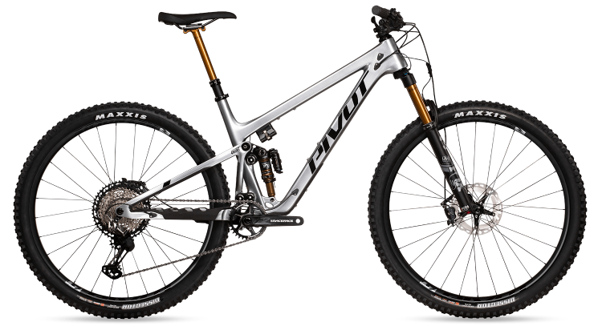

Co jsou MTB kola ?
MTB z anglické zkratky Mountain Bike jsou kola určená výhradně do těžkého terénu. Na rozdíl od silničních kol disponují pevnějším rámem, širšími pláštěmi...
MTB je v dnešní době jeden z nejpopulárnějších sportů, co se kol týče. Spousty lidí chtějí tenhle sport provádět, problém však jsou finance. Velmi záleží na typu MTB sportu, jelikož downhill se může pohybovat i kolem 150 000 Kč.
Typy MTB kol
Tyto typy kol se na první pohled mohou zdát velmi podobná, ne-li stejná. Ve skutečnosti jsou však všechna určená do jiných podmínek. A to ať už se jedná o vidlice, tlumiče či rám. Všechny typy, které jsou uvedené dole mají mnoho společných věcí. A to tlumiče, široké pláště, vysoké zdvihy.
ALL MOUNTAIN
Jedná se o jeden z nejlevnějších druhů, a to v intervalu od 36 000 Kč do 60 000 Kč. Je to takový univerzál MTB kol, jelikož se dá použít téměř všude.
TRAIL RIDING
Trail riding je nepopulárnější typ MTB sportu a to hlavně kvůli jeho kreativity. typů trailů je více, nejpopulárnější jsou však AIR LINES, kde už z názvu vyplíva, že se zde velmi vysoko skáče a provádí se různé triky.
ENDURO
Enduro kombinuje rychlou jízdu s technicky náročnýma sekcema. Při závodech se jede jedna trasa z kopce dolů, hodnotí se čas. Je to také jedna z nejpopulárnějších disciplín.
DOWNHILL
Downhill je disciplína, která se zaměřuje na extrémní sjezdy se skoky, kořeny, skalními úseky. Downhill jezdci nejvíce dbají na bezpečnost, jelikož downhill patří k nejnebezpečnějším. Downhill kola jsou také špička všech kol.
CROSS COUNTRY
Tato disciplína horské cyklistiky zahrnuje jízdu po různých terénech. Nenajdete zde však terén jako u např. enduro. XC zahrnuje strmou jízdu nahoru až po prudší sjezdy.